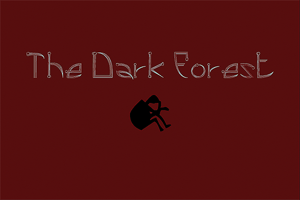

More than simply taking a class, VMD 105 gave me an opportunity (if I played my cards right) to tell a story, or at least moments from the story, The Dark Forest, a section of my larger more complex work, The Arrival. The Dark Forest is about a group of aliens called the Creatures of Light and Darkness (COLD). COLD members are made of light; however, something is happening in their galaxy and members are dying. On their way to the sun they stop on Earth and land in a forest. A new COLD member is about to be born.
I told the story over the course of the six-week summer session via my introduction to the world or raster and vector graphics, animation, print media and this final step, the web.
HOME RASTER VECTOR ANIMATION PRINT CONTACT